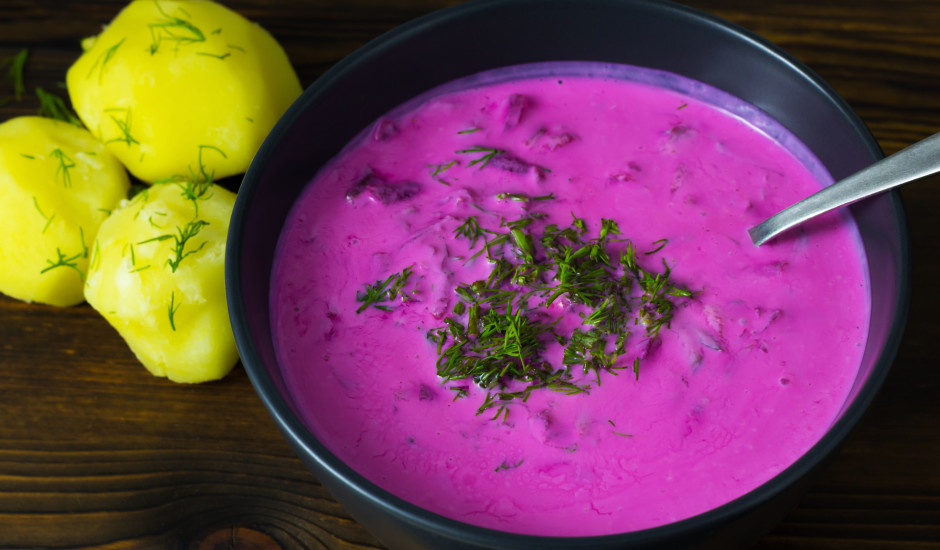

This is a typical latvian dish. We latvians thrive on this food in hot summers. Not that we have a lot of those, but even if the summer is cold, it cannot be imagined without Cold Soup
It's simple, refreshing and everyone has his/hers own recipe (as is tradition). I will show here the easiest one. Taste this and you will be eating this for the rest of summer!